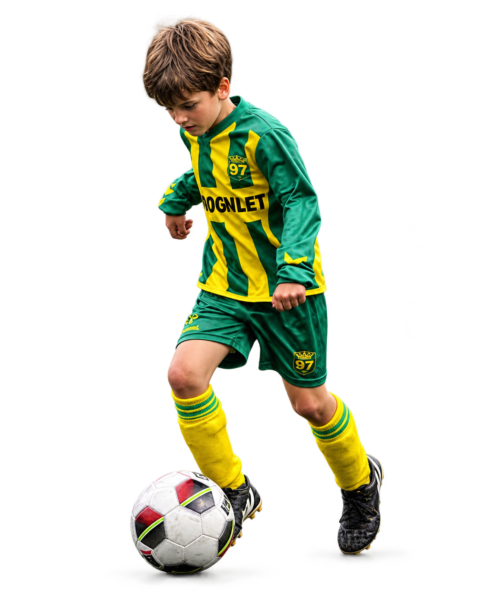

Welkom op mijn website!
Op deze website verzamel ik al mijn opdrachten voor het vak Informatica. Bekijk via het menu hierboven mijn pagina's over het binairstelsel, kleurmodellen, hoe computers werken en Artificial Intelligence (AI).

Ik ben Raul Woertman, 15 jaar oud en woon in Voorschoten. Ik woon thuis met mijn 2 broers en mijn ouders. Als ik niet op school zit vind ik het leuk om af te spreken met vrienden, te gamen of te voetballen bij Voorschoten '97, waar ik al vanaf mijn 6e voetbal.
Lees verder over mijOp deze website verzamel ik al mijn opdrachten voor het vak Informatica. Bekijk via het menu hierboven mijn pagina's over het binairstelsel, kleurmodellen, hoe computers werken en Artificial Intelligence (AI).